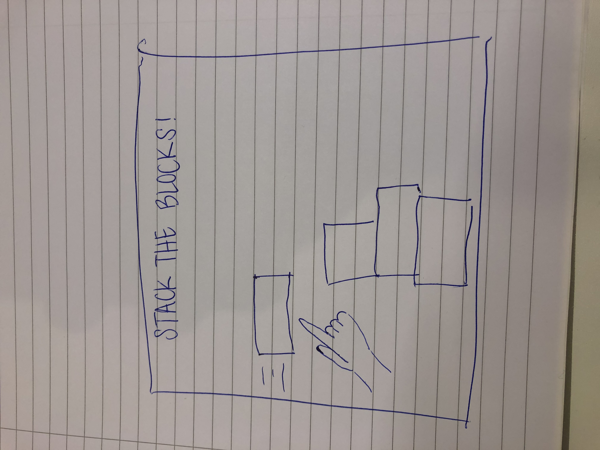
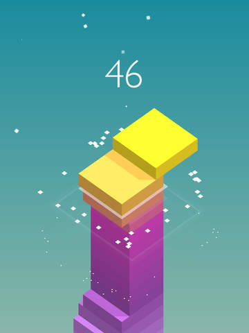

HCI Technologies
HCI Technologies
Topic assignment Playful interaction
Assignment A
Een teambuilding concept waarbij je als je samen een lift ingaat ervoor kan kiezen om de lift omhoog te laten gaan aan de hand van een spel. Het gehele spel vindt plaats in de lift, een van de muren heeft dan een groot scherm erop met touchscreen. Het is een spel voor meerdere spelers, wanneer je in de lift staat en het spel wilt spelen moet je samen bewegende blokken op het juiste moment aantikken zodat ze een toren vormen. Wanneer je de blokken goed stapelt gaat lift langzaam omhoog, totdat je op de juiste verdieping bent. Als de toren valt of je laat een van de blokken vallen is het game over en gaat de lift daarna op normaal tempo weer omhoog. Het is een touchscreen en de speler hoeven alleen het scherm aan te tikken wanneer ze op een blok tikken om die op de juiste te laten vallen. Aan input technologie wordt er gebruik gemaakt van touchscreen technologie, voor de touch functie in het spel. Daarnaast denk ik dat het leuk is als je een camera gebruikt waarmee de spelers op het scherm ook een soort player pop zien van zichzelf waar hun gezicht op is geplakt. De output technologie bevat display, op het scherm. Maar ook geluid, wanneer er een blok goed of juist slecht valt komen daar bijbehorende geluiden bij. En er is een oplopend achtergrondmuziekje die gelijk loopt met het omhoog gaan van de lift. Het concept moet ervoor zorgen dat mensen leren samen te werken en nieuwe mensen leren kennen in de lift met wie je normaal niet snel een praatje zou maken.
 Assignment B
Deze playful interaction installatie is gemaakt door het bedrijf Dalziel & Pow, een brand innovation studio. De opdrachtgever is een sportkledingmerk, Lululemon. Dit merk verkoopt vooral kleding voor sporten als yoga en pilates, dus veel sport leggings. In de winkel kan je de leggings aan proberen en op een yoga mat oefeningen uitoefenen, wanneer je dat doet bevind je je tegenover een groot scherm waar aan de hand van motion tracking jouw lichaam in een soort abstract beeld wordt omgezet met allerlei kleuren en kleine deeltjes om je heen bewegen. Het beeld spiegelt zich steeds aan jouw poses. Hierdoor kijk je tijdens je oefeningen naar een soort bewegend kunstwerk van jouw silhouet. Deze installatie is gemaakt voor het verbeteren van de koopervaring van de klanten. Door bewegingssensoren net als een kinect als input technologie krijgen klanten als output technologie een gaaf beeld te zien, een display. Het is een single player spel, en er is geen competitieve kant, het is puur bedoelt voor vermaak of decoratie.
Links:
Lululemon
Reflectie
Ik vond dit een van de leukste onderwerpen die we hebben behandeld maar tegelijkertijd lijkt dit mij een van de moeilijkste onderwerpen om zelf een idee bij te verzinnen. Er komt een heleboel creativiteit bij kijken en het lijkt me mega lastig om op een echt goed idee te komen, maar als dat lukt heb je wel een heel gaaf project. Ik denk dat dit in de toekomst nog vaak gebruikt gaat worden, omdat het een oplossing kan zijn voor problemen die ook echt leuk is, zoals die piano trap in het hoorcollege, het is eigenlijk best een simpele oplossingen maar heel effectief.
Ik had eigenlijk weinig beeld bij wat ik moest verwachten over dit onderwerp, en het enige wat ik kon bedenken was zo een grote piano op de vloer zoals je die vroeger in speelgoedwinkels soms had, maar het is leuk om te zien hoe veel verschillende toepassingen er zijn van dit onderwerp.